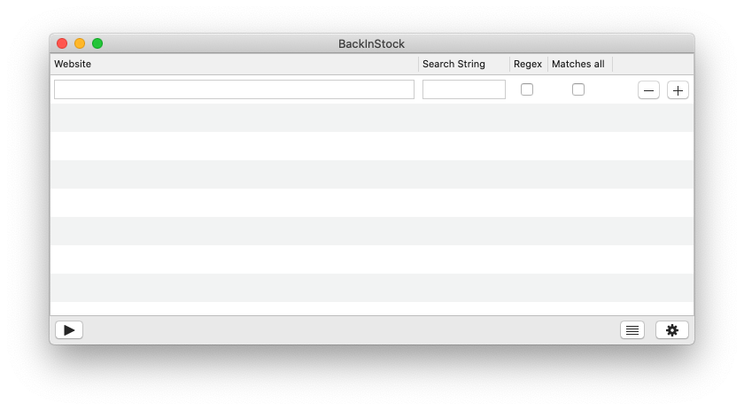
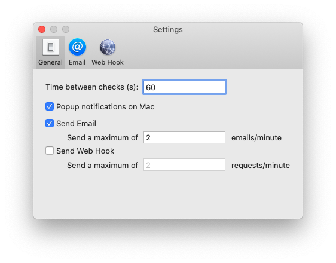
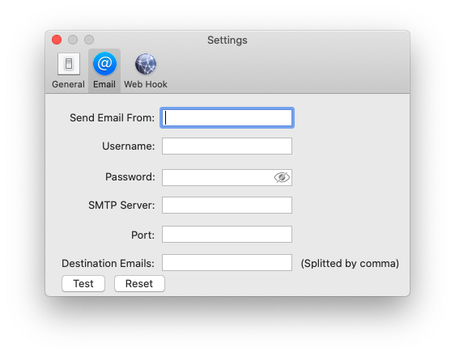
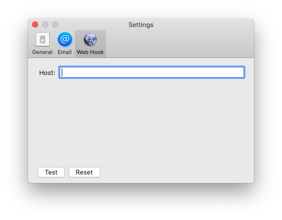

BackInStock is an app the allows you to specify your own URLs and specify your own search keywords, and how often you want to check for it.
It will then work tirelessly to check using your criteria.
BackInStock will automatically notify you via email or a custom web service request when your keywords are found.
|
First Launch
|
When you first launch the app, you can enter the website
that you want to track under the “website” column.
Example: https://www.example.com
The “Search String” is the criteria of what you want the app
to search for.
You can also specify multiple strings to search
for, which are separated by a comma.
If “Matches all” is checked, then all of the search strings
must be matched for you to get notified.
Else, if any of the
search strings are matched then you will get notified.
“Regex” is for matching using regex syntax. This is for more
advanced users.
Hit the “+” button will add another website to be tracked.
Hit the “-” will remove the last website.
|
| 
|
General Settings
|
Under “General”, this is where you can configure the time
interval between checks in seconds.
I would recommend
around 30 or more seconds.
“Popup notifications on Mac” will notify you on the
notification center.
“Send Email” will send an email every time it detects the
“Search String”.
Sometimes, you don’t want to receive too
many emails.
The “Send a maximum” will further limit up
to how many emails you want to receive per minute.
“Send Web Hook” will trigger a web request to the address
you specified. This can be used for triggering services like
“IFTTT” or other web services.
You can uncheck or check any of the three notification
methods.
|
| 
|
Email Settings
|
Under the “Email”, you can configure your email server
settings.
You need to have an email service that will let you
send email using SMTP.
“Send Email From” is the email address that you want the
recipients see.
“Username” is the login for the SMTP email service.
“Password” is the password for the SMTP email service.
“SMTP Server” is the server for the STMP email service.
“Port” is usually “465” or “587” depends on the service you
are using.
are using.
“Destination Emails” is the recipient email address.
|
| 
|
Web Hook Settings
|
Under the “Web Hook”, you can configure an external web
service this app can send request to.
For example: https://maker.ifttt.com/trigger/{event}/with/key/xxxxxxxxxx
The app will make a request to the above host and then you
can further customize from IFTTT.com to your own actions
when the link is triggered.
Like sending you a notification
or sending a tweet, etc.
|
| 
|
Logging
|
You can see what the app is doing by clicking the
hamburger icon.
You can also download the log file if you want to save it
elsewhere.
|
|
|
Privacy Policy
|